Animation
Il est possible de générer des animations avec Povray ; sachant qu'une animation n'est rien d 'autre qu'une succession d'images affichées à une fréquence donnée (de l'ordre de 25 images par seconde), il suffit de générer chacune des images séparément ... ceci revient cependant à générer une nouvelle description de scène pour chaque image, afin de prendre en compte les déplacement des objets et/ou de la caméra.
Pour vous faciliter le travail, Povray gère auomatiquement une variable nommée clock, dont vous pouvez récupérer la valeur (par défaut comprise entre 0 et 1), mais pas la modifier. La valeur de cette variable est automatiquement remise à jour pour chaque nouvelle image de la séquence à générer, en suivant une loi d'interpolation linéaire.
Exemple
- Soit une séquence de 11 images à générer. clock vaut la succession des valeurs suivantes pour chacune des images :
- image 0 : clock = 0.0
- image 1 : clock = 0.1
- image 2 : clock = 0.2
- ...
- image 9 : clock = 0.9
- image 10 : clock = 1.0
- On peut alors utiliser la valeur de la variable clock pour déplacer un objet à un position différente à chaque image :
sphere {
<0,0,0>, 1
pigment {Red}
translate <-0.5+clock, 0, 0>
}
On obtiendra alors la succession d'images suivante :
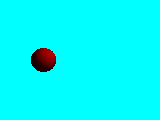
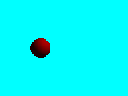
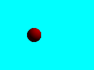
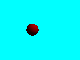
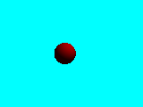
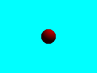
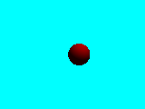
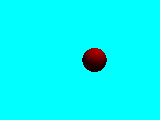
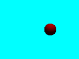
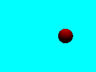
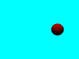
- Il reste cependant à préciser à Povray combien d'images on souhaite générer. Cela peut se faire en ligne de commande, mais aussi dans le fichier de paramètres externes .ini :
- Fichier de configuration :
Initial_Frame = 0 ; numéro de la première image
Final_Frame = 10 ; numéro de la dernière image
- Paramètres en ligne de commande :
+KFIn avec n le numéro de l'image de départ.
+KFFn avec n le numéro de l'image finale.
Remarques
- Il est possible de modifier les valeurs de départ et d'arrivée de la variable clock avant le lancement de Povray :
- Fichier de configuration :
Initial_Clock = valeur initiale
Final_Clock = valeur finale
- Paramètres en ligne de commande :
+KIn.n avec n.n la valeur réelle spécifiant la valeur initiale de clock
+KFn.n avec n.n la valeur réelle spécifiant la valeur finale de clock
- Il est possible d'indiquer à Povray de ne calculer qu'un sous-ensemble de la séquence prévue (par exemple pour distribuer les calculs sur plusieurs machines ou pour tester quelques images uniquement) :
- Fichier de configuration :
Subset_Start_Frame = n avec n le numéro de la première image à calculer
Subset_End_Frame = n avec n le numéro de la dernière image à calculer
- Paramètres en ligne de commande :
+SFn avec n le numéro de la première image à calculer
+SEn avec n le numéro de la dernière image à calculer
- Il est possible de ne calculer qu'une seule image de la séquence (pour effectuer un test par exemple) :
- Fichier de configuration :
Clock = n.n avec n.n la valeur réelle de clock
- Paramètres en ligne de commande :
+Kn.n avec n.n la valeur réelle de clock
Travail à réaliser
- Générez la séquence d'exemple à partir du fichier qui vous est donné ci-dessous.
#include "colors.inc"
// définition de la couleur de fond
background { color Cyan }
// positionnement de la caméra
camera {
location <0, 0, -10>
look_at <0, 0,0>
}
// définition d'une source
light_source {
<2, 4, -3>
color White
}
// définition d'une sphère
sphere {
<0, O, 0>, 1
texture {
pigment { Red }
}
translate <-0.5+clock, 0, 0>
}
Vous générerez une séquence d'une durée de 1 seconde, en prenant garde que la taille des images générées ne soit pas trop grande, pour éviter des temps de calcul trop élevés.
- Une fois les images générées, il est intéressant de pouvoir les ranger dans un fichier vidéo. Povray ne peut faire cette opération. Il existe cependant de nombreux logiciels permettant de la réaliser, sous tous types de systèmes d'exploitation. Sous linux, vous utiliserez mencoder qui s'utilise en ligne de commande. Cet utilitaire possède de très nombreuses options, qui dépassent le cadre de ce TP. Une façon très simple de l'utiliser est de taper la commande suivante :
mencoder mf://testanim??.png -ovc copy -oac copy -o testanim.avi
On suppose ici que les fichiers générés par povray sont au format png et qu'ils portent le nom testanim suivi des deux chiffres correspondant à leur rang, suivis de .png. Les options suivantes précisent que la vidéo (-ovc) et l'audio (-aoc) doivent être recopiés tels quels dans le fichier avi qui suit, sans faire appel à un quelconque codec de compression.
Appliquez cette commande sur vos images et vérifiez que vous pouvez relire la vidéo générée.
- Modifiez cette séquence de telle sorte que l'objet soit immobile, mais que la caméra fasse un zoom avant vers lui. Générez la séquence vidéo correspondante, d'une longueur de 2 secondes.
- En reprenant l'exemple de la cuve du TP1, générer une séquence permettant à la caméra de faire un tour complet autour de cet objet.